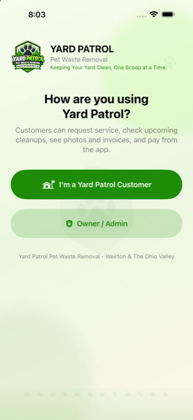
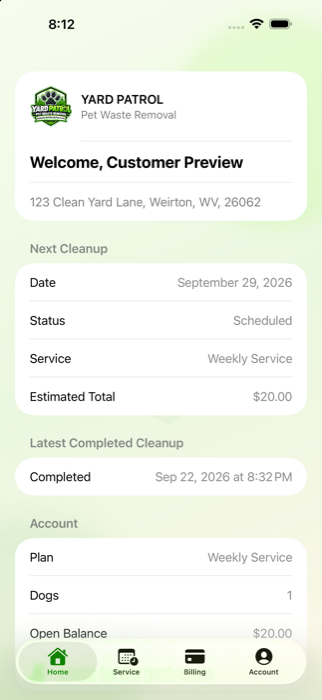

🐾
Weekly Cleanup
Consistent scheduled cleanup for households that want the yard maintained every week.
Dependable pet waste removal for busy dog owners, clean lawns, and happier backyards. Simple service plans, straightforward pricing, and a professional system built around reliability.
Choose a recurring route plan or call for a one-time cleanup when the yard needs extra attention.
Consistent scheduled cleanup for households that want the yard maintained every week.
A flexible recurring option for lighter-use yards and smaller dog households.
Perfect before events, after winter, or anytime the yard needs a reset.
Add deodorizing treatment to help freshen pet areas after cleanup.
Starting at $30 per visit. Final price depends on yard condition and number of dogs.
Starting at $50 for a standard one-time service.
Starting at $75 when a yard needs heavier first-time cleanup.
Choose your plan and number of dogs for a quick starting estimate, then send your service request directly to Yard Patrol.
Weekly service for 1 dog.
Request This ServiceInitial and one-time pricing can vary with yard condition and buildup.Weekly, biweekly, one-time, or initial cleanup.
Your service is organized and tracked through the Yard Patrol system.
Jobs, notes, photos, and service status stay organized.
Service invoices and secure Square payments are managed in one place.
Customer Mode is built into the next Yard Patrol app update. Approved customers can see their next cleanup, request schedule changes, add deodorizer, request an extra cleanup, view completed-service photos, check invoices, pay securely through Square, review payment history, and receive service notifications.
Approved Yard Patrol customers receive a private access code for their account. Build 10 with Customer Mode is currently being prepared for TestFlight and will be released as the next App Store update. The app also keeps a separate protected Owner / Admin side for business operations.


Yard Patrol Pet Waste Removal serves Weirton and the Ohio Valley with practical recurring cleanup plans backed by a customer and service-management system that keeps visits, photos, requests, invoices, payments, and records organized.
“Protecting Lawns From Unwanted Landmines.”
No. As long as the service area is safely accessible, recurring cleanup can be completed without you being home.
Yes. Yard deodorizer starts at $10 and can be added to a cleanup visit.
Initial and overgrown cleanups start at $75. Pricing can vary with yard size, number of dogs, and buildup.
Yes. Customer Mode is built into Build 10, the next app update. Approved customers will use a private Yard Patrol access code to manage service, requests, photos, invoices, payments, and notifications. The current 1.0 App Store submission is still with Apple.
Serving Weirton and the Ohio Valley.